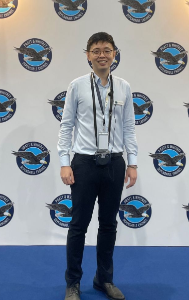

Technology Engineer
Pratt & Whitney 2023-Present
Lead the development and implementation of AI and robotics automation innovation projects for aerospace MRO processes, driving business value through improved quality, reduced turnaround time, and enhanced workplace safety (EHS).
Key Responsibilities:
Project Leadership & Strategy:
- Lead cross-functional teams in the successful delivery of multiple concurrent AI and robotics projects
- Collaborate with stakeholders to identify opportunities for technological advancement and process optimization
- Drive innovation through proof-of-concept development and strategic implementation of new technologies
AI & Robotics Innovation:
- Led computer vision integration with robotic systems for MRO repair process automation.
- Design and deploy Large Language Models (LLMs) for process automation and intelligent documentation systems hosted on enterprise cloud
- Evaluate and integrate cutting-edge technologies from vendors
Technical Excellence & Implementation:
- Define and track key performance metrics (KPIs) to measure project success and ROI across multiple AI and robotics initiatives
- Create and maintain product roadmaps for AI/robotics solutions, balancing technical feasibility with business priorities
- Develop comprehensive implementation plans including risk assessment, resource allocation, and change management strategies for the projects

Senior Robotics Software Engineer
NDRmedical 2020-2023
Lead the development and deployment of ANT-C, an image-guided needle targeting robot for biopsy and ablation procedures.
Key Responsibilities:
Project Management & Client Collaboration:
- Manage cross-functional teams, collaborate with doctors and hospital administrators to ensure successful deployment of robotic systems in clinical settings
- Liaise with medical professionals, engineers, and regulatory teams to ensure compliance with medical device standards and requirements
- Train Nagoya City Hospital doctors on the robotics software GUI and system operation procedures
- Support first-in-man trials, ensuring regulatory compliance and system performance
Technical Leadership & Validation:
- Develop and maintain robot control software for precise needle targeting
- Conduct preclinical testing and validation of robotic systems
- Optimize robot performance through simulations and real-world testing
Deployment & On-Site Support:
- Provide real-time support during clinical trials and system deployments
- Lead process improvements based on user feedback and performance metrics

Subsea Mechanical Engineer
Baker Hughes (formerly GE Oil & Gas) 2018-2020
Managed the design, manufacturing, and testing of subsea Christmas trees, complex mechanical assemblies used to regulate oil and gas flow from subsea wells.
Key Responsibilities:
Project Planning & Execution:
- Oversaw the end-to-end design process for subsea Christmas trees and related components
- Managed project schedules, mechanical design and resource allocation constraints
- Ensured compliance with quality standards and industry regulations
Stakeholder & Cross-Functional Coordination:
- Worked closely with manufacturing teams to ensure design feasibility
- Traveled to Montrose, Scotland headquarter for project alignment and technical advising
- Conducted regular project updates and stakeholder communications
Manufacturing & Quality Assurance Oversight:
- Designed and supervised Factory Acceptance Tests for critical components
- Managed Non-Conformance Reports and implemented corrective actions
- Ensured components met geometric tolerancing and specification requirements